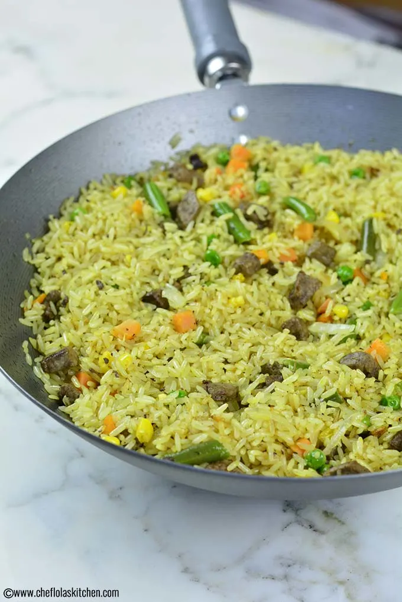

Jollof Rice

Description
Nigerian fried rice is a rice dish that’s made with meats, mixed veggies (carrots, peas, sweet corn, green beans) and spices. Like jollof rice, It is a common feature in parties. What makes this recipe authentic is the use of liver as the protein of choice.
This fried rice is entirely different from the popular Asian Chicken Fried Rice because the depth of the taste in the latter comes from the Soy sauce while the depth of taste of the latter comes from the Curry powder, Thyme, Seasoning cubes, and of course the abundance of vegetables like Carrots, Green beans, Peas, sweet corn, and Onions.
Ingredients
- Rice
- Chicken stock
- Vegetable oil
- Onion
- Carrots
- Sweet Peas
- Sweet Corn
- Green beans
- Thyme
- Curry powder
- Scallions
- Chicken stock cube/seasoning
- Beef liver cube/seasoning
- Salt
- Cayenne pepper
Steps
- Wash rice using only clean water and then transfer washed rice to pot.
- Add meat stock, and seasoning mix/thyme,curry, stir and taste. Adjust if needed.
- Cook rice in chicken stock till all the water is absorbed.
- Turn off heat and leave the pot covered for about 5 mins then fluff rice.
- Heat up vegetable oil in a large skillet, sauté the onion, add pepper cook for about a minute and then stir in the mixed veggies, liver pieces and chopped scallions.
- Stir-fry for about 3 to 5 minutes on high heat.
- Take it off the heat and serve.